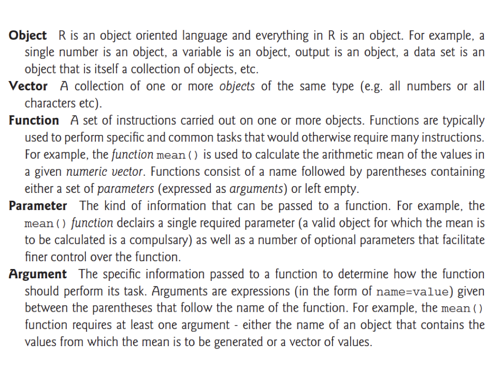
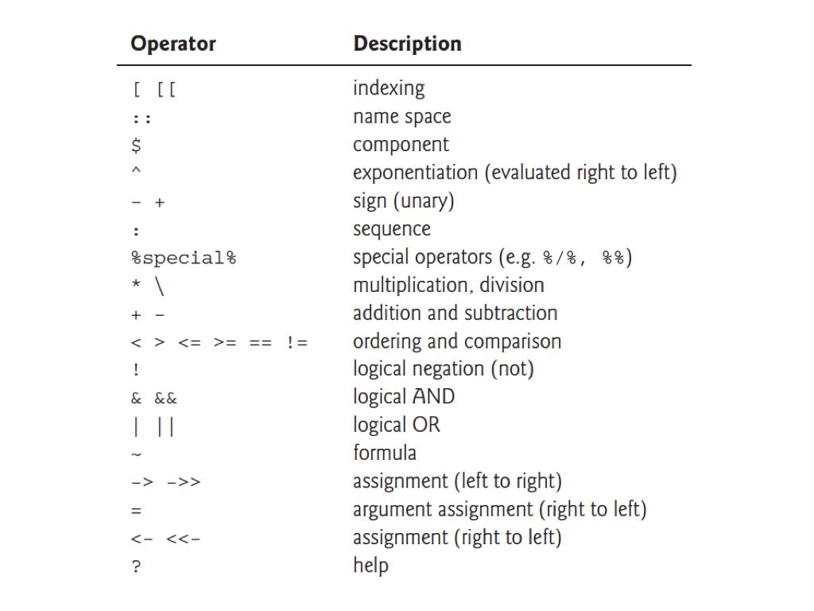
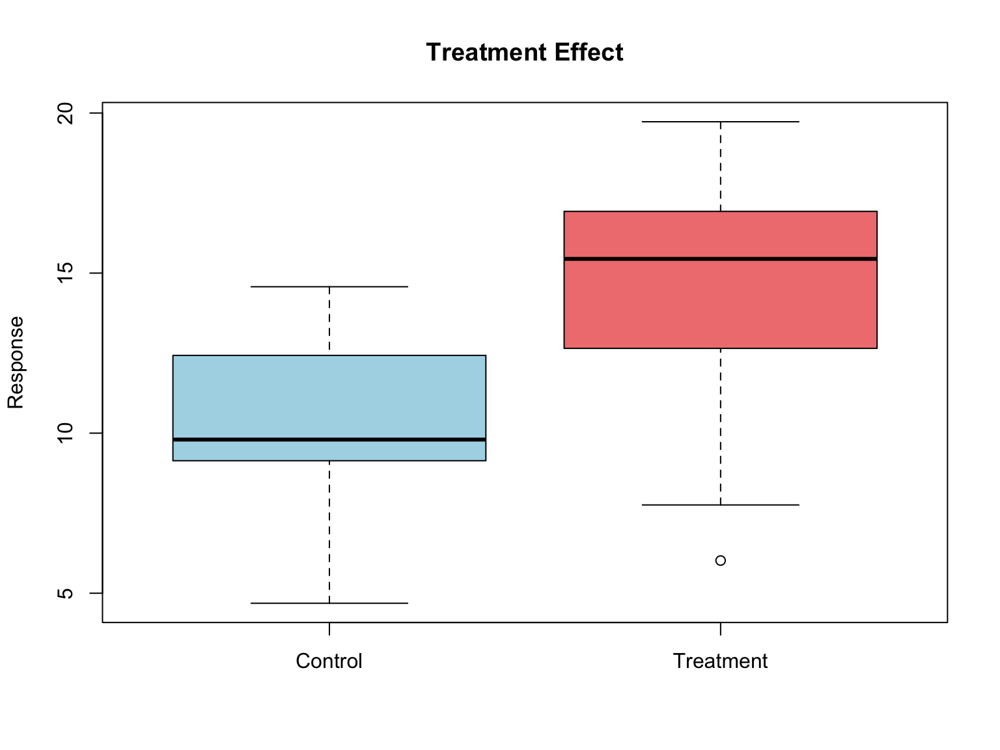
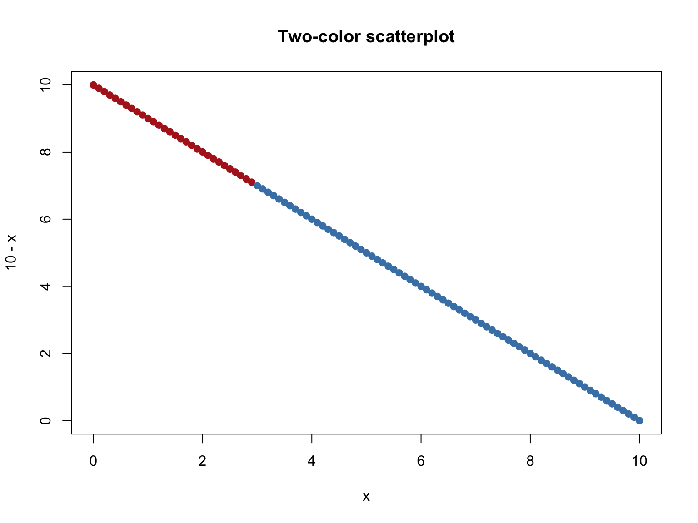
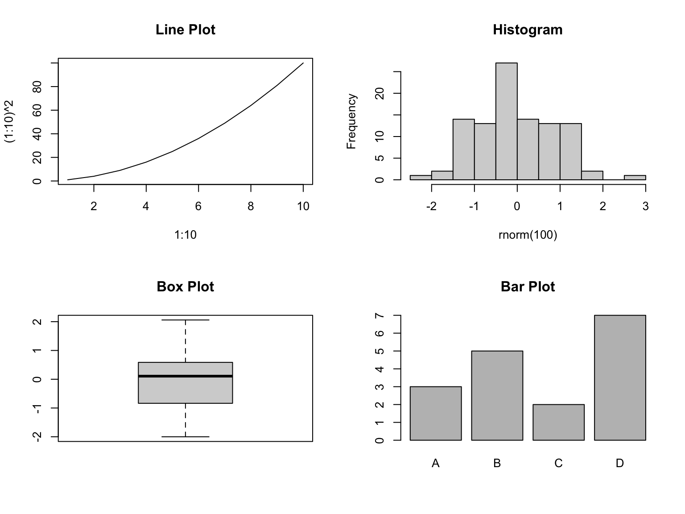
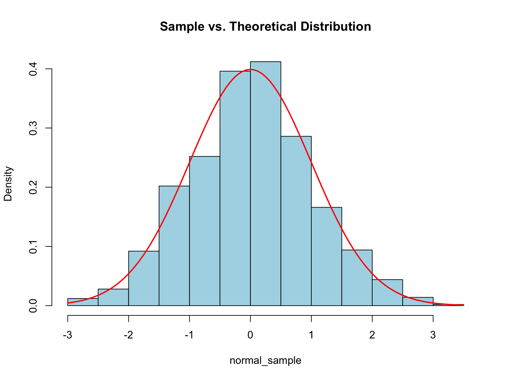
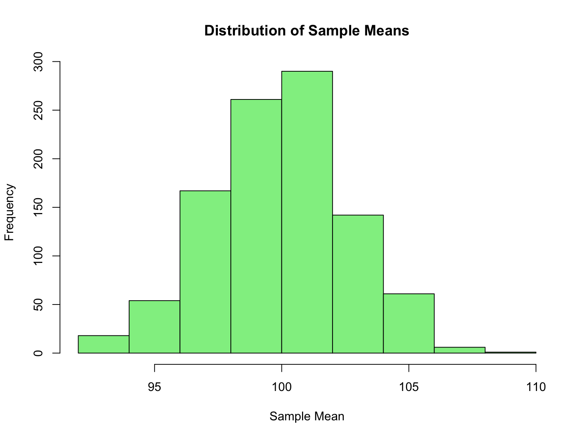

# Analysis of hydrogel mechanical properties
# Author: Your Name
# Date: 2026-10-01
# 1. Load packages ---------------------------------------------------------
library(tidyverse)
# 2. Read data -------------------------------------------------------------
hydrogel <- read.csv("data/hydrogel_data.csv")
# 3. Summarize -------------------------------------------------------------
summary(hydrogel)
# 4. Visualize -------------------------------------------------------------
ggplot(hydrogel, aes(x = concentration, y = compression)) +
geom_boxplot()11 R Programming Fundamentals
NoteLearning Objectives
After completing this chapter, you will be able to:
- Explain why R is well-suited for scientific computing
- Understand R’s object-oriented nature and examine objects with
class(),typeof(), andstr() - Use RStudio as an integrated development environment
- Perform basic arithmetic and variable assignment in R
- Work with vectors and understand vectorized operations
- Use logical operators and handle floating-point comparisons correctly
- Create and manipulate data frames, lists, and matrices
- Use built-in functions and access help documentation including vignettes
- Interpret common error messages and handle missing values (
NA) correctly - Manage the working directory with RStudio Projects
- Install packages and resolve namespace conflicts
- Create basic visualizations
- Read and write data files
- Clean up your R environment and graphics devices
11.1 Why R for Scientific Computing?
R is a programming language designed specifically for statistical computing and graphics (R Core Team, 2024). It is an offshoot of a language called S, developed in 1976 at Bell Laboratories by John Chambers and colleagues. R was created in 1991 by Ross Ihaka and Robert Gentleman at the University of Auckland, New Zealand (hence the name “R”), and has since become one of the most widely used tools in data science, statistics, and bioinformatics.
Unlike general-purpose languages that happen to have statistics libraries, R was built from the ground up for data analysis. This design choice permeates every aspect of the language—from how it handles vectors and missing values to how it creates publication-quality graphics with minimal code.
As an interpreted language, R code is translated to machine language by the R interpreter each time it runs, as opposed to being compiled beforehand. This makes R highly interactive and excellent for exploratory data analysis. You can type a command, see the result immediately, and adjust your approach—a rapid feedback loop that’s essential for understanding data.
TipLearning to Think in R
Learning R isn’t just about memorizing syntax—it’s about learning to think about data in a new way. R encourages you to work with entire vectors and data frames at once rather than processing elements one by one. This “vectorized thinking” may feel unfamiliar at first, but it leads to more concise, readable, and efficient code.
NotePrefer Python, or need both?
This chapter teaches R, the language used for statistics and graphics throughout the book. Chapter 12 covers the same ground in Python 3, section by section, and ends with an R-to-Python translation table (Table 12.4). If you already know one language, reading the two chapters side by side is the fastest way to learn the other.
R offers several advantages for researchers:
Statistical Power. R was built by statisticians for statistics. It includes comprehensive implementations of classical and modern statistical methods.
Graphics Excellence. R produces publication-quality graphics with fine-grained control over every aspect of visualization.
Package Ecosystem. Over 20,000 packages extend R’s capabilities for virtually every analytical need, from genomics to machine learning.
Reproducibility. R scripts document your analysis completely. Combined with Quarto (which produced this book; see Chapter 5), you can create reproducible documents that integrate code, results, and narrative.
Active Community. A large, welcoming community provides abundant resources, tutorials, and support.
Cost. R is free and open-source, removing financial barriers to sophisticated analysis.
The Console vs. Scripts
When you first start using R, you’ll interact with it through the console—a command-line interface where you type commands and see results immediately. This is perfect for exploration: trying things out, checking your data, and learning how functions work.
But as your analyses become more complex, you’ll want to save your work in scripts—text files (ending in .R) that contain a sequence of commands. Scripts are the foundation of reproducible research. When you run a script, R executes each command in order, exactly as you wrote it. This means:
- You can reproduce your analysis by running the script again
- Others can verify your work by reading and running your code
- You can modify and extend your analysis without starting from scratch
- Your future self will understand what you did and why
The workflow looks like this: explore in the console to understand your data, then move your successful commands into a script. Your script becomes the official record of your analysis—clean, organized, and executable.
A good script is self-contained: it holds every command needed to reproduce the analysis from a fresh R session, in order. A conventional layout is a comment header, then package loading, then data import, then the analysis, with comments (anything after #) explaining why rather than restating what the code does:
In RStudio, create a script with File → New File → R Script, and run the current line or selection with Ctrl+Enter (Cmd+Enter on a Mac). Comment lines ending in four or more dashes, as above, become collapsible sections in the editor’s outline. Quarto documents (Chapter 5) extend the same idea by interleaving code chunks with formatted narrative.
A script can also be run from the shell without opening RStudio at all, which is how analyses run on Talapas (Chapter 15). The same small program looks like this in R and in Python; the shell side of running scripts is covered in Section 10.10.
11.2 RStudio: Your R Environment
While R can run from the command line, most users work in RStudio, an integrated development environment (IDE) that makes R more accessible and productive.
The RStudio Interface
RStudio organizes your workspace into four panes:
Source (top-left). Where you write and edit scripts. Code here isn’t executed until you explicitly run it.
Console (bottom-left). The interactive R session. Commands typed here execute immediately. Output appears here.
Environment/History (top-right). Shows variables you’ve created (Environment tab) and commands you’ve run (History tab).
Files/Plots/Help (bottom-right). File browser, plot viewer, and help documentation.

NoteR is not RStudio
R is the programming language; RStudio is the integrated development environment that lets you write and run R (and other languages such as Python) comfortably. R must be installed first, and RStudio then finds it. If you prefer Positron or VS Code, the panes have different names but the same jobs (Section 2.7).
Tip
Learn keyboard shortcuts! Ctrl+Enter (Windows/Linux) or Cmd+Enter (Mac) runs the current line or selection. Ctrl+Shift+S runs the entire script. The pane layout can be rearranged under Tools → Global Options → Pane Layout, and the Packages and Help tabs in the bottom-right pane are worth clicking through on your first day.
RStudio Projects and the Working Directory
Every R session has a working directory: the folder that relative paths such as "data/results.csv" are resolved against, exactly as in the shell (Chapter 4). You can inspect and change it from R:
RStudio Projects organize your work with self-contained directories and remove the need for setwd() altogether:
- Go to File → New Project
- Choose New Directory → New Project
- Name your project and select a location
- RStudio creates a
.Rprojfile
Opening the .Rproj file sets the working directory to the project folder automatically, so paths in your scripts can be relative to the project root and the code runs unchanged on a collaborator’s computer. A setwd("/Users/yourname/...") line at the top of a script, by contrast, breaks the moment anyone else runs it.
11.3 Understanding R: Everything is an Object
Before diving into R syntax, it helps to understand R’s fundamental design philosophy: everything in R is an object. This object-oriented approach means that every piece of data you work with—numbers, text, datasets, even functions themselves—is stored as an object with specific properties.
# Numbers are objects
x <- 42
class(x)
#> [1] "numeric"
typeof(x)
#> [1] "double"
# Text strings are objects
name <- "Gene Expression"
class(name)
#> [1] "character"
typeof(name)
#> [1] "character"
# Even functions are objects!
class(mean)
#> [1] "function"
typeof(mean)
#> [1] "closure"
# And data frames are objects
samples_df <- data.frame(a = 1:3, b = c("x", "y", "z"))
class(samples_df)
#> [1] "data.frame"
typeof(samples_df)
#> [1] "list"Every object has:
-
A class: Determines how the object behaves with functions (what
class()returns) -
A type: The underlying storage mode (what
typeof()returns) - Attributes: Optional metadata like names, dimensions, or custom properties
The str() function provides a compact display of an object’s structure:
Understanding this object-oriented nature helps you:
11.4 R Basics: Arithmetic and Variables
R as a Calculator
The simplest use of R is arithmetic:
# Basic operations
4 * 4
#> [1] 16
# Order of operations applies
(4 + 3 * 2^2)
#> [1] 16
# More complex expressions
sqrt(144) + log(100)
#> [1] 16.60517
# Integer division and modulo
17 %/% 5 # Integer division: how many times 5 goes into 17
#> [1] 3
17 %% 5 # Modulo: remainder after division
#> [1] 2R follows standard mathematical order of operations (PEMDAS). The modulo operator (%%) is particularly useful for tasks like determining if a number is even or odd, cycling through indices, or extracting digits from numbers:
Creating Variables
Variables store values for later use. In R, the assignment operator is <-:
Notice that an assignment itself prints nothing: z <- x * y silently stores the value. To see what a variable holds, type its name alone or call print():
Note
You can also use = for assignment in R, but <- is the traditional and preferred style. It makes assignment visually distinct from function arguments, which use =.
Variable Naming Rules
- Names must start with a letter
- Can contain letters, numbers, periods, and underscores
- Names cannot contain operators (
-,*,+, spaces) because R would try to evaluate them - R is case-sensitive:
Gene,gene, andGENEare three different variables - Use descriptive names:
sample_countis better thansc - Prefer underscores to periods:
sample.countis legal R, but the period has a different meaning in Python (Chapter 12), and snake_case names move between the two languages without surprises
Reserved Words
R has reserved words (Table 11.1) that cannot be used as variable names because they have special meaning in the language:
R also has semi-reserved words—names of built-in constants and functions that you can overwrite but generally shouldn’t:
# These work but are dangerous:
T <- 5 # Overwrites TRUE abbreviation
F <- 10 # Overwrites FALSE abbreviation
c <- "text" # Shadows the c() function
mean <- 42 # Shadows the mean() function
# If you accidentally overwrite something, use rm() to remove it
rm(c) # Removes your 'c' variable, restoring access to c()
WarningAvoid Common Name Collisions
Avoid using T and F as variable names—they are common abbreviations for TRUE and FALSE. Similarly, never name variables c, t, mean, sum, data, or df: these are all existing R functions (df() is the F-distribution density and data() loads built-in datasets), and shadowing them leads to confusing errors such as object of type 'closure' is not subsettable, which means “you tried to index a function.” Names like experiment, counts, or samples_df are safer and more descriptive.
11.5 Key R Terminology
Before diving deeper into R, let’s establish some fundamental terminology that you’ll encounter throughout your R programming journey (Figure 11.2):

Understanding R’s operators is equally important. Figure 11.3 shows the main operators you’ll use, listed in order of precedence (operations higher in the table are evaluated first):

Tip
Note that R uses <- for assignment (right to left), while = is typically used for argument assignment within function calls. Both work for variable assignment, but <- is the conventional R style.
11.6 Vectors: R’s Fundamental Data Structure
R thinks in terms of vectors—ordered collections of values of the same type. Even a single number is a vector of length 1. Because all elements must share a type, mixing types in c() silently converts the whole vector to the most flexible one: c(1, "a", TRUE) becomes three character strings, and c(1, TRUE) becomes 1 1.
Creating Vectors
The c() function (for “combine” or “concatenate”) creates vectors:
# Numeric vector
measurements <- c(2, 3, 4, 2, 1, 2, 4, 5, 10, 8, 9)
measurements
#> [1] 2 3 4 2 1 2 4 5 10 8 9
# Character vector
samples <- c("control", "treatment_A", "treatment_B")
samples
#> [1] "control" "treatment_A" "treatment_B"
# Logical vector
passed <- c(TRUE, FALSE, TRUE, TRUE, FALSE)
passed
#> [1] TRUE FALSE TRUE TRUE FALSEA few functions tell you about any vector without printing all of it—essential once vectors have thousands of elements:
The numbers in square brackets at the start of each output line, such as [1], are not part of the data: they give the index of the first element on that line, which helps you find your place in long output.
Sequence Generation
For regular sequences, use shortcuts:
# Integer sequence
1:10
#> [1] 1 2 3 4 5 6 7 8 9 10
# Sequence with step
seq(0, 10, by = 0.5)
#> [1] 0.0 0.5 1.0 1.5 2.0 2.5 3.0 3.5 4.0 4.5 5.0 5.5 6.0 6.5 7.0
#> [16] 7.5 8.0 8.5 9.0 9.5 10.0
# Specified length
seq(0, 1, length.out = 5)
#> [1] 0.00 0.25 0.50 0.75 1.00
# Repeated values
rep("A", 5)
#> [1] "A" "A" "A" "A" "A"
rep(c(1, 2), times = 3)
#> [1] 1 2 1 2 1 2
rep(c(1, 2), each = 3)
#> [1] 1 1 1 2 2 2Sorting Vectors
The sort() function returns a sorted vector:
To get the indices that would sort a vector (useful for reordering related data), use order():
x <- c(5, 2, 8, 1, 9, 3)
order(x) # Indices: 4th element is smallest, 2nd is next, etc.
#> [1] 4 2 6 1 3 5
# Use order() to sort one vector by another
names <- c("Sample_A", "Sample_B", "Sample_C")
values <- c(30, 10, 20)
names[order(values)] # Names sorted by values
#> [1] "Sample_B" "Sample_C" "Sample_A"Vectorized Operations
R’s power comes from vectorized operations—operations that apply to entire vectors at once:
x <- c(2, 3, 4, 2, 1, 2, 4, 5, 10, 8, 9)
# Operations apply to each element
x * 2
#> [1] 4 6 8 4 2 4 8 10 20 16 18
x^2
#> [1] 4 9 16 4 1 4 16 25 100 64 81
log(x)
#> [1] 0.6931472 1.0986123 1.3862944 0.6931472 0.0000000 0.6931472 1.3862944
#> [8] 1.6094379 2.3025851 2.0794415 2.1972246
sqrt(x)
#> [1] 1.414214 1.732051 2.000000 1.414214 1.000000 1.414214 2.000000 2.236068
#> [9] 3.162278 2.828427 3.000000
# Operations between vectors (element-wise)
y <- 1:11
x + y
#> [1] 3 5 7 6 6 8 11 13 19 18 20
x * y
#> [1] 2 6 12 8 5 12 28 40 90 80 99This is much faster and cleaner than writing loops!
Vector Indexing
Access specific elements using square brackets:
measurements <- c(2, 3, 4, 2, 1, 2, 4, 5, 10, 8, 9)
# Single element (1-indexed!)
measurements[1]
#> [1] 2
measurements[5]
#> [1] 1
# Multiple elements
measurements[c(1, 3, 5)]
#> [1] 2 4 1
# Range
measurements[2:5]
#> [1] 3 4 2 1
# Negative indices exclude
measurements[-1] # All but first
#> [1] 3 4 2 1 2 4 5 10 8 9
measurements[-(1:3)] # All but first three
#> [1] 2 1 2 4 5 10 8 9
# Logical indexing
measurements[measurements > 5]
#> [1] 10 8 9
Important
R uses 1-based indexing! The first element is [1], not [0] as in Python and most other languages (see Section 12.16).
11.7 Data Types in R
R has several fundamental data types:
glimpse() print under each column name.
| Type | Tibble abbreviation | Description | Example |
|---|---|---|---|
numeric (double) |
<dbl> |
Real numbers (default) |
3.14, 42
|
integer |
<int> |
Whole numbers |
1L, 100L
|
character |
<chr> |
Text strings |
"hello", "gene1"
|
logical |
<lgl> |
Boolean values |
TRUE, FALSE, NA
|
factor |
<fct> |
Categorical variables | Treatment levels |
Date, POSIXct
|
<date>, <dttm>
|
Dates and date-times |
Sys.Date(), Sys.time()
|
Numbers are doubles by default: 42 is numeric, and you must write 42L to get an integer. Integer and double vectors together are called numeric vectors.
# Check types with class()
class(3.14)
#> [1] "numeric"
class("hello")
#> [1] "character"
class(TRUE)
#> [1] "logical"
# Type coercion
as.numeric("42")
#> [1] 42
as.character(123)
#> [1] "123"
as.logical(0) # FALSE
#> [1] FALSE
as.logical(1) # TRUE
#> [1] TRUE
as.numeric("hello") # NA, with a warning
#> [1] NA
WarningCoercing Factors to Numbers
as.numeric() on a factor returns the internal integer codes of the levels, not the numbers you can see:
Convert through as.character() first. This trap most often appears when a numeric column was read from a file as text or factor because of a stray non-numeric entry.
Factors
Factors are special vectors for representing categorical data with a fixed set of possible values called levels. They’re essential for statistical modeling and data analysis in R:
# Create a factor from a character vector
treatment <- c("control", "drug_A", "drug_A", "control", "drug_B", "drug_B")
treatment_factor <- as.factor(treatment)
treatment_factor
#> [1] control drug_A drug_A control drug_B drug_B
#> Levels: control drug_A drug_B
# Check the levels
levels(treatment_factor)
#> [1] "control" "drug_A" "drug_B"
Note
Factor levels are stored alphabetically by default, regardless of the order they appear in your data. This affects how results are displayed and can impact statistical analyses (e.g., the reference level in regression models).
To specify a custom level order, use the levels argument:
Factors are memory-efficient because they store unique levels once and use integer indices to reference them. Use str() to see this internal representation:
Special Values
R has special values for missing data and undefined results (Table 11.3):
| Value | Meaning | Produced by | Test with |
|---|---|---|---|
NA |
Not Available (missing data) | Blank cells in a file, failed coercion | is.na() |
NaN |
Not a Number (undefined math) |
0/0, sqrt(-1)
|
is.nan() (also is.na()) |
Inf, -Inf
|
Positive / negative infinity |
1/0, -1/0
|
is.infinite(), is.finite()
|
NULL |
The empty object | Missing list elements, functions that return nothing | is.null() |
Handling NA values is a common task in data analysis. Any blank entry in a data file becomes NA when read into R, and NA is contagious: most arithmetic and summary functions return NA if any input is missing, so that a missing value is never silently ignored.
num <- c(0, 1, 2, NA, 4)
mean(num) # NA: one missing value poisons the result
#> [1] NA
mean(num, na.rm = TRUE) # Most summary functions accept na.rm = TRUE
#> [1] 1.75
is.na(num) # Which elements are missing?
#> [1] FALSE FALSE FALSE TRUE FALSE
sum(is.na(num)) # How many?
#> [1] 1
num[!is.na(num)] # Keep only the non-missing values
#> [1] 0 1 2 4
ImportantNever test for missing values with
==
NA means “unknown,” so R cannot say whether an unknown value equals anything—num == NA returns NA for every element rather than TRUE/FALSE. Always use is.na(). Note also that NA is a logical constant (class(NA) is "logical") and a reserved word: it is distinct from the string "NA", from 0, and from an empty string.
Logical Operators and Comparisons
R provides a rich set of operators for logical comparisons and Boolean operations:
# Comparison operators
5 > 3 # Greater than
#> [1] TRUE
5 < 3 # Less than
#> [1] FALSE
5 >= 5 # Greater than or equal
#> [1] TRUE
5 <= 5 # Less than or equal
#> [1] TRUE
5 == 5 # Equal (note: two equals signs!)
#> [1] TRUE
5 != 3 # Not equal
#> [1] TRUE
# Logical operators
TRUE & FALSE # AND
#> [1] FALSE
TRUE | FALSE # OR
#> [1] TRUE
!TRUE # NOT
#> [1] FALSE
# Vectorized logical operations
x <- c(1, 5, 10, 15, 20)
x > 5 & x < 18 # Both conditions must be true
#> [1] FALSE FALSE TRUE TRUE FALSE
x < 5 | x > 15 # Either condition can be true
#> [1] TRUE FALSE FALSE FALSE TRUEThe %in% operator is particularly useful for checking membership in a set:
Finding Indices with which()
The which() function returns the indices where a logical condition is TRUE—useful when you need positions rather than values:
x <- c(10, 5, 20, 15, 8, 25)
# Find indices where condition is TRUE
which(x > 12)
#> [1] 3 4 6
# Get the values at those positions
x[which(x > 12)]
#> [1] 20 15 25
# Find the index of the maximum value
which.max(x)
#> [1] 6
# Find the index of the minimum value
which.min(x)
#> [1] 2
# Find indices of specific values
which(x == 15)
#> [1] 4
# Practical example: find which samples exceed a threshold
expression_levels <- c(2.5, 8.1, 4.2, 12.3, 6.7, 15.2)
high_expression <- which(expression_levels > 10)
high_expression # Indices 4 and 6
#> [1] 4 6
Tip
While which() is useful, you often don’t need it—logical vectors work directly for subsetting:
Use which() when you specifically need the index positions (e.g., to report which samples, to use in loops, or for which.max()/which.min()).
ImportantOperator Precedence
R evaluates operators in a specific order. From highest to lowest precedence:
-
^(exponentiation) -
-(unary minus, for negation) -
:(sequence) -
%any%(special operators like%%,%/%,%in%) -
*,/(multiplication, division) -
+,-(addition, subtraction) -
<,>,<=,>=,==,!=(comparisons) -
!(logical NOT) -
&,&&(logical AND) -
|,||(logical OR) -
<-,=(assignment)
Use parentheses to make your intentions clear and avoid unexpected results.
Floating-Point Precision
A common source of confusion involves floating-point arithmetic. Computers represent decimal numbers with limited precision, which can lead to unexpected results:
Instead of using == for floating-point comparisons, use all.equal():
Warning
Always use all.equal() or check if the difference is within an acceptable tolerance when comparing floating-point numbers. Never rely on == for exact equality of decimal calculations.
Using dplyr::near() for Comparisons
The tidyverse provides dplyr::near() as a convenient alternative for checking near-equality, especially when working with data frames:
| x |
|---|
| 0.3 |
| 0.3 |
Use near() when filtering or comparing numeric columns in data frames, and all.equal() when you need detailed comparison information.
11.8 Functions
Functions perform operations on inputs and return outputs. R has thousands of built-in functions.
Using Functions
Function Arguments
Functions take arguments that modify their behavior:
Argument Order and Naming
R functions expect arguments in a specific order. When you don’t name arguments, R matches them by position:
# These are equivalent - arguments matched by position
set.seed(42)
x1 <- rnorm(5, 0, 10) # n, mean, sd
x1
#> [1] 13.709584 -5.646982 3.631284 6.328626 4.042683
# Named arguments can be in any order
set.seed(42)
x2 <- rnorm(sd = 10, n = 5, mean = 0)
x2
#> [1] 13.709584 -5.646982 3.631284 6.328626 4.042683
Warning
Relying on position order can lead to subtle bugs. If you accidentally swap arguments, you may get unexpected results without any error message:
When in doubt, name your arguments explicitly for clarity and safety.
Nesting Functions
One powerful feature of R is the ability to nest function calls—using the output of one function as the input to another without creating intermediate variables:
# Without nesting: create intermediate objects
z <- c(10, 20, 30)
result1 <- mean(z)
result1
#> [1] 20
# With nesting: more concise
result2 <- mean(c(10, 20, 30))
result2
#> [1] 20
# More complex nesting
# Calculate the mean of the square roots of 1 through 10
mean(sqrt(1:10))
#> [1] 2.246828
# Nested functions are evaluated from inside out
round(mean(sqrt(c(4, 9, 16, 25))), digits = 2)
#> [1] 3.5Nesting makes code more compact, but deeply nested expressions can become hard to read. As a rule of thumb, if you find yourself nesting more than 2-3 functions, consider breaking the expression into steps or using the pipe operator (covered in Section 8.9.1).
Getting Help
R has excellent built-in documentation:
# Get help on a function
?mean
help(mean)
# Search help
help.search("correlation")
??correlation
# See function arguments
args(mean)
# See examples
example(mean)
# Find functions containing a string in their name
apropos("mean") # Returns: "colMeans", "mean", "mean.Date", etc.
# Find functions by partial name matching
apropos("cor") # Returns all functions containing "cor"Vignettes and Demos
Beyond function-level help, packages often include vignettes—comprehensive tutorials that demonstrate how to use the package:
Some packages also include demos—interactive demonstrations of functionality:
Tip
Vignettes are often the best place to start when learning a new package. They provide context and workflows that function documentation alone cannot convey.
The help page structure:
- Description: What the function does
- Usage: Function syntax
- Arguments: What inputs it accepts
- Value: What it returns
- Examples: Working code examples
Reading Error Messages
R’s error messages are terse but informative once you know the common ones (Table 11.4). Read them from the bottom up: the last line usually says what went wrong, and the lines above say where.
| Error message | Meaning | Fix |
|---|---|---|
object 'x' not found |
No variable with that name exists | Check spelling and case; run the line that creates it |
could not find function "read_csv" |
The package that provides it is not loaded |
library() the package, or check spelling |
unexpected ')' or unexpected symbol
|
Mismatched brackets or quotes, or a missing comma | Count opening and closing brackets; look at the line before |
non-numeric argument to binary operator |
Arithmetic on text (or a factor) | Check the object with class(); coerce with as.numeric()
|
object of type 'closure' is not subsettable |
You indexed a function, usually because a variable was never created and its name matches a function (df, data) |
Run the line that creates the object; rename it |
argument "x" is missing, with no default |
A required argument was not supplied | Check args(fun) or ?fun
|
cannot open file 'data.csv': No such file |
Wrong path or working directory |
getwd(), list.files(); use a project and relative paths |
+ prompt in the console instead of >
|
R is waiting for you to finish an expression | Press Esc and fix the unbalanced bracket or quote |
TipAsking for Help
When the help page and a web search of the exact error text do not solve the problem, ask a person—but make it easy to help you. Provide a minimal reproducible example: the smallest piece of code that shows the problem, including a few rows of data (or a built-in dataset like iris), the exact error message, and what you expected instead. The reprex package formats such an example for pasting into Stack Overflow, a course forum, or an issue tracker. Preparing the example often reveals the bug by itself.
11.9 Installing and Loading Packages
Base R includes dozens of useful functions, but as you become a more advanced R user, you’ll need functions for specialized analyses. Fortunately, thousands of additional functions are distributed in the form of R packages.
Installing Packages
Packages from the Comprehensive R Archive Network (CRAN) are easy to install:
Note
Package names are case-sensitive and must be in quotation marks when installing. You only need to install a package once on your system (and again after upgrading R). RStudio offers the same thing through a dialog at Tools → Install Packages, and the Packages tab in the bottom-right pane lists what is installed. Bioconductor packages are installed with BiocManager::install() instead (Section 2.3).
Loading Packages
To use functions from an installed package, you must load it into your current session:
Unlike installation, you need to call library() every time you start a new R session. Note that you don’t need quotation marks with library().
Tip
It’s good practice to load all required packages at the beginning of your script. This makes dependencies clear and helps others reproduce your work.
Namespace Conflicts
When you load multiple packages, function names can collide. The most recently loaded package “wins,” masking functions from earlier packages:
When conflicts occur, you have several options:
1. Use the package prefix (recommended)
2. Control loading order
Load packages with conflicting names in the order that gives you the default behavior you want.
3. Use the conflicted package
Warning
The filter() and lag() functions from dplyr commonly conflict with base R’s stats::filter() and stats::lag(). If your filtering code suddenly stops working, namespace conflicts are often the culprit.
11.10 Data Frames
Data frames are R’s workhorse for tabular data—think spreadsheets or database tables. Each column is a vector, and columns can have different types.
Creating Data Frames
# Create vectors
sample_id <- c("S1", "S2", "S3", "S4", "S5")
treatment <- c("control", "drug_A", "drug_A", "drug_B", "drug_B")
concentration <- c(0, 10, 20, 10, 20)
response <- c(1.2, 3.4, 5.6, 2.8, 4.1)
# Combine into data frame
experiment <- data.frame(
sample_id = sample_id,
treatment = treatment,
concentration = concentration,
response = response
)
experiment| sample_id | treatment | concentration | response |
|---|---|---|---|
| S1 | control | 0 | 1.2 |
| S2 | drug_A | 10 | 3.4 |
| S3 | drug_A | 20 | 5.6 |
| S4 | drug_B | 10 | 2.8 |
| S5 | drug_B | 20 | 4.1 |
All columns must have the same length, and every column holds a single type—a numeric column cannot contain a stray "n/a" without turning the whole column into text (see Section 11.7). Rows can optionally carry names, which appear in printed output and are useful for labelling samples:
| sample_id | treatment | concentration | response | |
|---|---|---|---|---|
| Sample_1 | S1 | control | 0 | 1.2 |
| Sample_2 | S2 | drug_A | 10 | 3.4 |
| Sample_3 | S3 | drug_A | 20 | 5.6 |
| Sample_4 | S4 | drug_B | 10 | 2.8 |
| Sample_5 | S5 | drug_B | 20 | 4.1 |
Note
Row names are a base R convenience. The tidyverse’s tibbles (Chapter 8) drop them, on the principle that a sample identifier is data and belongs in an ordinary column such as sample_id; tibble::rownames_to_column() makes the conversion. In this book we keep identifiers in columns.
Examining Data Frames
# Structure
str(experiment)
#> 'data.frame': 5 obs. of 4 variables:
#> $ sample_id : chr "S1" "S2" "S3" "S4" ...
#> $ treatment : chr "control" "drug_A" "drug_A" "drug_B" ...
#> $ concentration: num 0 10 20 10 20
#> $ response : num 1.2 3.4 5.6 2.8 4.1
# Dimensions
dim(experiment)
#> [1] 5 4
nrow(experiment)
#> [1] 5
ncol(experiment)
#> [1] 4
# Preview
head(experiment, 3)| sample_id | treatment | concentration | response |
|---|---|---|---|
| S1 | control | 0 | 1.2 |
| S2 | drug_A | 10 | 3.4 |
| S3 | drug_A | 20 | 5.6 |
| sample_id | treatment | concentration | response | |
|---|---|---|---|---|
| 4 | S4 | drug_B | 10 | 2.8 |
| 5 | S5 | drug_B | 20 | 4.1 |
# Summary statistics
summary(experiment)
#> sample_id treatment concentration response
#> Length :5 Length :5 Min. : 0 Min. :1.20
#> N.unique :5 N.unique :3 1st Qu.:10 1st Qu.:2.80
#> N.blank :0 N.blank :0 Median :10 Median :3.40
#> Min.nchar:2 Min.nchar:6 Mean :12 Mean :3.42
#> Max.nchar:2 Max.nchar:7 3rd Qu.:20 3rd Qu.:4.10
#> Max. :20 Max. :5.60
# Column names
names(experiment)
#> [1] "sample_id" "treatment" "concentration" "response"
colnames(experiment)
#> [1] "sample_id" "treatment" "concentration" "response"In RStudio, you can also use View() to open a spreadsheet-like viewer for interactive exploration:
Accessing Data Frame Elements
| sample_id | response |
|---|---|
| S1 | 1.2 |
| S2 | 3.4 |
| S3 | 5.6 |
| S4 | 2.8 |
| S5 | 4.1 |
| sample_id | treatment | concentration | response |
|---|---|---|---|
| S1 | control | 0 | 1.2 |
| sample_id | treatment | concentration | response |
|---|---|---|---|
| S1 | control | 0 | 1.2 |
| S2 | drug_A | 10 | 3.4 |
| S3 | drug_A | 20 | 5.6 |
| treatment | response |
|---|---|
| control | 1.2 |
| drug_A | 3.4 |
| drug_A | 5.6 |
| sample_id | treatment | concentration | response | |
|---|---|---|---|---|
| 2 | S2 | drug_A | 10 | 3.4 |
| 3 | S3 | drug_A | 20 | 5.6 |
| sample_id | treatment | concentration | response | |
|---|---|---|---|---|
| 2 | S2 | drug_A | 10 | 3.4 |
| 3 | S3 | drug_A | 20 | 5.6 |
| 5 | S5 | drug_B | 20 | 4.1 |
The [row, column] notation is the same one used for matrices: leaving a dimension empty selects everything along it, so experiment[, 2] is all rows of column 2 and experiment[2, ] is row 2 of every column. Conditional selection works because a comparison such as experiment$response > 3 returns a logical vector with one TRUE/FALSE per row, and a logical vector inside the brackets keeps the TRUE rows:
Of the three ways to pull out a column, experiment$response is the most readable and the one you will use most; experiment[["response"]] is the choice when the column name is stored in a variable; and experiment[, "response"] is the matrix-style form.
Adding and Modifying Columns
| sample_id | treatment | concentration | response | replicate | log_response |
|---|---|---|---|---|---|
| S1 | control | 0 | 1.2 | 1 | 0.1823216 |
| S2 | drug_A | 10 | 3.4 | 1 | 1.2237754 |
| S3 | drug_A | 20 | 5.6 | 2 | 1.7227666 |
| S4 | drug_B | 10 | 2.8 | 1 | 1.0296194 |
| S5 | drug_B | 20 | 4.1 | 2 | 1.4109870 |
11.11 Lists
Lists are flexible containers that can hold objects of different types and lengths. Unlike vectors, which require all elements to be the same type, lists can contain a mix of vectors, data frames, or even other lists.
Creating Lists
# Create individual vectors
measurements <- c(10, 20, 30, 40, 50)
categories <- c("high", "medium", "low")
status <- factor(c("active", "inactive"))
# Combine into a list
my_list <- list(
values = measurements,
labels = categories,
status = status
)
my_list
#> $values
#> [1] 10 20 30 40 50
#>
#> $labels
#> [1] "high" "medium" "low"
#>
#> $status
#> [1] active inactive
#> Levels: active inactive
# Check the structure
str(my_list)
#> List of 3
#> $ values: num [1:5] 10 20 30 40 50
#> $ labels: chr [1:3] "high" "medium" "low"
#> $ status: Factor w/ 2 levels "active","inactive": 1 2Indexing Lists
Lists use double square brackets [[]] to access individual elements:
Note
Single brackets [] return a sublist, while double brackets [[]] extract the actual element. This distinction matters when working with list components.
11.12 Matrices
Matrices are two-dimensional arrays where all elements must be the same type. Unlike data frames, matrices don’t have named columns by default and are optimized for mathematical operations.
Creating Matrices
# Create a matrix from a vector
mat <- matrix(1:12, nrow = 3, ncol = 4)
mat
#> [,1] [,2] [,3] [,4]
#> [1,] 1 4 7 10
#> [2,] 2 5 8 11
#> [3,] 3 6 9 12
# Create with row-wise filling
matrix(1:12, nrow = 3, ncol = 4, byrow = TRUE)
#> [,1] [,2] [,3] [,4]
#> [1,] 1 2 3 4
#> [2,] 5 6 7 8
#> [3,] 9 10 11 12
# From vectors using cbind (column bind) or rbind (row bind)
col1 <- c(1, 2, 3)
col2 <- c(4, 5, 6)
cbind(col1, col2)
#> col1 col2
#> [1,] 1 4
#> [2,] 2 5
#> [3,] 3 6
rbind(col1, col2)
#> [,1] [,2] [,3]
#> col1 1 2 3
#> col2 4 5 6Matrix Operations
# Dimensions
dim(mat)
#> [1] 3 4
nrow(mat)
#> [1] 3
ncol(mat)
#> [1] 4
# Transpose (swap rows and columns)
t(mat)
#> [,1] [,2] [,3]
#> [1,] 1 2 3
#> [2,] 4 5 6
#> [3,] 7 8 9
#> [4,] 10 11 12
# Indexing: [row, column]
mat[1, 2] # First row, second column
#> [1] 4
mat[1, ] # Entire first row
#> [1] 1 4 7 10
mat[, 2] # Entire second column
#> [1] 4 5 6
mat[1:2, 2:3] # Submatrix
#> [,1] [,2]
#> [1,] 4 7
#> [2,] 5 8Matrices are particularly useful for linear algebra operations and when you need efficient numerical computations.
11.13 Reading and Writing Data
Reading Files
# CSV files (comma-separated)
measurements <- read.csv("data.csv")
# Tab-separated files
measurements <- read.table("data.tsv", header = TRUE, sep = "\t")
# Excel files (requires readxl package)
library(readxl)
measurements <- read_excel("data.xlsx")
# Specify options
measurements <- read.csv("data.csv",
header = TRUE,
stringsAsFactors = FALSE,
na.strings = c("", "NA", "N/A"))read.csv() is a convenience wrapper around the general read.table(), and the arguments mean the same thing in both:
-
header = TRUE: the first line contains column names -
sep: the delimiter between fields (","for CSV,"\t"for tab-separated) -
row.names = 1: treat the first column as row names rather than data -
na.strings: which strings should becomeNA -
stringsAsFactors: whether text columns become factors (the default has beenFALSEsince R 4.0)
The tidyverse’s readr package provides read_csv(), read_tsv(), and read_delim(), which are faster, never create row names or factors, report how each column was parsed, and return a tibble (an enhanced data frame). Both families are in everyday use and you will meet the readr versions in Section 8.8.2; the base functions are handy because they need no packages at all, for instance in a script run on a cluster.
WarningAlways check what you imported
Reading a file rarely fails loudly; it fails quietly by giving you the wrong column types. Immediately after any import, look at the result with str() or glimpse(), head(), dim(), and summary() (or View() in RStudio). A numeric column that shows up as character means a non-numeric entry is hiding somewhere in the file.
Writing Files
# CSV output
write.csv(experiment, "experiment_results.csv", row.names = FALSE)
# Tab-separated
write.table(experiment, "results.tsv",
sep = "\t",
quote = FALSE,
row.names = FALSE)
# readr equivalents (never write row names, never quote unnecessarily)
readr::write_csv(experiment, "experiment_results.csv")
readr::write_tsv(experiment, "results.tsv")row.names = FALSE matters: without it, write.csv() adds an unnamed first column of row numbers that becomes a mystery column the next time the file is read. quote = FALSE keeps text fields free of quotation marks, which other programs (and shell tools such as cut and awk, Chapter 7) expect.
TipNever overwrite the raw data
Read the original data file, but write results to a new file with a different name. The raw file is the one thing in an analysis you cannot regenerate (Section 8.5.4).
11.14 Basic Visualization
R excels at creating graphics. Here’s a quick introduction to base R plotting; ggplot2, the approach used for the rest of the book, is covered in Chapter 13:
Scatter Plots
Histograms
Box Plots

When the data live in a data frame, the formula interface is more convenient: y ~ group reads as “y broken down by group,” and data = says where to find the columns. The same formula notation reappears in statistical models throughout R.
Common Plot Arguments
Most base graphics functions share the arguments in Table 11.5.
| Argument | Controls | Example |
|---|---|---|
main |
Plot title | main = "Growth curve" |
xlab, ylab
|
Axis labels | ylab = "OD600" |
xlim, ylim
|
Axis limits | ylim = c(0, 1.5) |
type |
"p" points, "l" lines, "b" both, "h" vertical bars |
type = "l" |
col |
Color (name, hex code, or rgb()) |
col = "steelblue" |
pch |
Point character, 0–25 (19 = filled circle) |
pch = 19 |
cex |
Size multiplier for points and text | cex = 1.5 |
lwd, lty
|
Line width and type | lwd = 2, lty = "dashed" |
breaks |
Number of bins (hist() only) |
breaks = 30 |
add = TRUE |
Draw onto the existing plot (curve(), lines(), points()) |
curve(dnorm(x), add = TRUE) |
Graphical parameters such as col, pch, and cex are vectorized: give a vector with one entry per data point and each point gets its own value. Combined with ifelse() (Section 11.16.1) or a factor, this is how base graphics color points by group:

Multiple Plots
par() sets graphical parameters that persist for the rest of the session; mfrow = c(rows, cols) divides the plotting window into a grid that successive plots fill left to right, top to bottom.
# Create 2x2 layout
par(mfrow = c(2, 2))
# Four different plots
plot(1:10, (1:10)^2, type = "l", main = "Line Plot")
hist(rnorm(100), main = "Histogram")
boxplot(rnorm(50), main = "Box Plot")
barplot(c(3, 5, 2, 7), names.arg = c("A", "B", "C", "D"), main = "Bar Plot")
# Reset to single plot
par(mfrow = c(1, 1))
Always reset with par(mfrow = c(1, 1)) (or save the old settings with old <- par(mfrow = c(2, 2)) and restore them with par(old)); otherwise every later plot in the session lands in the grid.
Tip
For publication-quality graphics, explore the ggplot2 package (Wickham, 2016), which provides a powerful and consistent grammar of graphics. We cover ggplot2 in detail in Chapter 13.
11.15 The Split-Apply-Combine Approach
A common pattern in data analysis is to split data by groups, apply a function to each group, and combine the results. This split-apply-combine workflow appears repeatedly in scientific computing.
Using tapply() for Grouped Operations
The tapply() function applies a function to subsets of a vector, split by a factor:
# Sample data
values <- c(23, 45, 67, 34, 56, 78, 12, 89)
groups <- factor(c("A", "A", "A", "B", "B", "B", "C", "C"))
# Mean by group
tapply(values, groups, mean)
#> A B C
#> 45.0 56.0 50.5
# Standard deviation by group
tapply(values, groups, sd)
#> A B C
#> 22.00000 22.00000 54.44722
# Custom summary: range
tapply(values, groups, function(x) max(x) - min(x))
#> A B C
#> 44 44 77Using aggregate() for Data Frames
For data frames, aggregate() summarizes multiple columns at once:
| Sepal.Length | Sepal.Width | Petal.Length | Petal.Width | Species |
|---|---|---|---|---|
| 5.1 | 3.5 | 1.4 | 0.2 | setosa |
| 4.9 | 3.0 | 1.4 | 0.2 | setosa |
| 4.7 | 3.2 | 1.3 | 0.2 | setosa |
| 4.6 | 3.1 | 1.5 | 0.2 | setosa |
| 5.0 | 3.6 | 1.4 | 0.2 | setosa |
| 5.4 | 3.9 | 1.7 | 0.4 | setosa |
| Species | Sepal.Length | Sepal.Width | Petal.Length | Petal.Width |
|---|---|---|---|---|
| setosa | 5.006 | 3.428 | 1.462 | 0.246 |
| versicolor | 5.936 | 2.770 | 4.260 | 1.326 |
| virginica | 6.588 | 2.974 | 5.552 | 2.026 |
| Species | Sepal.Length.mean | Sepal.Length.sd |
|---|---|---|
| setosa | 5.006 | 0.3524897 |
| versicolor | 5.936 | 0.5161711 |
| virginica | 6.588 | 0.6358796 |
The apply() Family
R provides several related functions for different data structures (Table 11.6):
# Apply to matrix columns
mat <- matrix(1:12, nrow = 3)
apply(mat, 2, sum) # Column sums (MARGIN = 2)
#> [1] 6 15 24 33
apply(mat, 1, sum) # Row sums (MARGIN = 1)
#> [1] 22 26 30
# Apply to each element of a list
my_list <- list(a = 1:5, b = 10:15, c = 100:110)
lapply(my_list, mean)
#> $a
#> [1] 3
#>
#> $b
#> [1] 12.5
#>
#> $c
#> [1] 105
sapply(my_list, mean) # Simplified output
#> a b c
#> 3.0 12.5 105.0
Tip
The tidyverse packages (covered in Chapter 8) provide more intuitive alternatives like group_by() and summarize() for this workflow.
11.16 Basic Programming Constructs
As you develop your R skills, you’ll encounter situations requiring conditional logic and iteration.
Conditional Statements with ifelse()
The ifelse() function provides vectorized conditional logic:
# Basic ifelse
scores <- c(85, 72, 91, 68, 79)
ifelse(scores >= 80, "Pass", "Fail")
#> [1] "Pass" "Fail" "Pass" "Fail" "Fail"
# Nested conditions
grades <- ifelse(scores >= 90, "A",
ifelse(scores >= 80, "B",
ifelse(scores >= 70, "C", "F")))
grades
#> [1] "B" "C" "A" "F" "C"
# Useful for creating indicator variables
treatment <- c("control", "drug", "drug", "control", "drug")
colors <- ifelse(treatment == "drug", "red", "blue")Type-Safe Conditionals with if_else()
The tidyverse provides dplyr::if_else(), which is stricter than base R’s ifelse():
library(dplyr)
x <- c(-2, -1, 0, 1, 2)
# if_else() requires matching types for true/false
if_else(x > 0, "positive", "non-positive")
#> [1] "non-positive" "non-positive" "non-positive" "positive" "positive"
# Handles NA explicitly with the 'missing' argument
y <- c(1, NA, 3, NA, 5)
if_else(y > 2, "high", "low", missing = "unknown")
#> [1] "low" "unknown" "high" "unknown" "high"
# Creates a simple absolute value implementation
if_else(x < 0, -x, x)
#> [1] 2 1 0 1 2
Tip
Use dplyr::if_else() over base ifelse() when:
- You want type checking (prevents accidentally mixing numbers and strings)
- You need explicit control over NA handling
- You’re already using tidyverse functions
For Loops
While R is optimized for vectorized operations, loops are sometimes necessary:
Writing Simple Functions
You can create your own functions for repeated tasks (Chapter 14 treats this in depth):
# Define a function
calculate_cv <- function(x) {
# Coefficient of variation: SD / mean * 100
cv <- sd(x) / mean(x) * 100
return(cv)
}
# Use the function
readings <- c(10, 12, 11, 13, 9, 14)
calculate_cv(readings)
#> [1] 16.26808
# Function with multiple arguments and default values
summarize_data <- function(x, digits = 2) {
result <- c(
mean = round(mean(x), digits),
sd = round(sd(x), digits),
n = length(x)
)
return(result)
}
summarize_data(readings)
#> mean sd n
#> 11.50 1.87 6.00
summarize_data(readings, digits = 3)
#> mean sd n
#> 11.500 1.871 6.00011.17 Random Sampling and Simulation
R makes it easy to generate random data and run simulations:
# Set seed for reproducibility
set.seed(123)
# Random samples from distributions
uniform_sample <- runif(100, min = 0, max = 1)
normal_sample <- rnorm(1000, mean = 0, sd = 1)
poisson_sample <- rpois(100, lambda = 5)
# Visualize normal distribution
hist(normal_sample,
probability = TRUE, # Density instead of counts
main = "Sample vs. Theoretical Distribution",
col = "lightblue")
# Add theoretical curve
curve(dnorm(x, mean = 0, sd = 1),
add = TRUE,
col = "red",
lwd = 2)
Common Distribution Functions
For distribution xxx (e.g., norm, unif, pois, binom):
-
rxxx()— Random samples -
dxxx()— Density/probability -
pxxx()— Cumulative distribution function -
qxxx()— Quantile function
Repeated Simulations with replicate()
The replicate() function repeats an expression multiple times and collects the results—perfect for simulations (Figure 11.11):
# Shuffle integers 1-10 five times
set.seed(42)
replicate(5, sample(1:10, size = 10, replace = FALSE))
#> [,1] [,2] [,3] [,4] [,5]
#> [1,] 1 8 9 3 5
#> [2,] 5 7 10 1 4
#> [3,] 10 4 3 2 2
#> [4,] 8 1 4 6 8
#> [5,] 2 5 5 10 3
#> [6,] 4 10 6 8 1
#> [7,] 6 2 1 4 10
#> [8,] 9 6 2 5 7
#> [9,] 7 9 8 7 6
#> [10,] 3 3 7 9 9
# Simulate sampling distributions
# Take 1000 samples of size 30 and calculate mean of each
set.seed(123)
sample_means <- replicate(1000, mean(rnorm(30, mean = 100, sd = 15)))
hist(sample_means, main = "Distribution of Sample Means",
col = "lightgreen", xlab = "Sample Mean")
replicate()
The replicate() function belongs to the “apply” family and returns a matrix (if results are vectors of equal length) or a list (if results vary in length).
11.18 Useful Numeric Transformations
R and the tidyverse provide many functions for transforming numeric data. These are particularly useful within mutate() operations.
Cumulative and Running Aggregates
Base R provides functions for running (cumulative) calculations:
x <- c(1, 2, 3, 4, 5)
cumsum(x) # Running sum: 1, 3, 6, 10, 15
#> [1] 1 3 6 10 15
cumprod(x) # Running product: 1, 2, 6, 24, 120
#> [1] 1 2 6 24 120
cummax(x) # Running maximum
#> [1] 1 2 3 4 5
cummin(x) # Running minimum
#> [1] 1 1 1 1 1
# Useful for time series data
daily_cases <- c(10, 15, 8, 22, 18)
cumsum(daily_cases) # Total cases over time
#> [1] 10 25 33 55 73Offsets with lead() and lag()
The dplyr::lead() and dplyr::lag() functions let you reference values before or after the current position:
library(dplyr)
x <- c(10, 20, 30, 40, 50)
lag(x) # Previous value: NA, 10, 20, 30, 40
#> [1] NA 10 20 30 40
lead(x) # Next value: 20, 30, 40, 50, NA
#> [1] 20 30 40 50 NA
# Calculate differences from previous value
x - lag(x)
#> [1] NA 10 10 10 10
# Detect changes
x != lag(x)
#> [1] NA TRUE TRUE TRUE TRUE
# Lag by more than one position
lag(x, n = 2)
#> [1] NA NA 10 20 30This is invaluable for time series analysis, detecting changes, and calculating growth rates.
Ranking Values
dplyr provides several ranking functions:
x <- c(5, 1, 3, 2, 2, NA)
min_rank(x) # Standard competition ranking (1, 2, 2, 4)
#> [1] 5 1 4 2 2 NA
dense_rank(x) # No gaps after ties (1, 2, 2, 3)
#> [1] 4 1 3 2 2 NA
row_number(x) # Unique ranks (ties broken by position)
#> [1] 5 1 4 2 3 NA
# Rank in descending order
min_rank(desc(x))
#> [1] 1 5 2 3 3 NA
# Practical example: find top 3 values
expr <- tibble(gene = c("A", "B", "C", "D", "E"),
expression = c(5.2, 8.1, 3.4, 9.7, 6.5))
expr |> filter(min_rank(desc(expression)) <= 3)| gene | expression |
|---|---|
| B | 8.1 |
| D | 9.7 |
| E | 6.5 |
Binning Numbers with cut()
The cut() function divides continuous data into discrete bins:
ages <- c(15, 25, 35, 45, 55, 65, 75)
# Create age groups
cut(ages, breaks = c(0, 18, 35, 55, 100))
#> [1] (0,18] (18,35] (18,35] (35,55] (35,55] (55,100] (55,100]
#> Levels: (0,18] (18,35] (35,55] (55,100]
# Custom labels
cut(ages,
breaks = c(0, 18, 35, 55, 100),
labels = c("minor", "young_adult", "middle_aged", "senior"))
#> [1] minor young_adult young_adult middle_aged middle_aged senior
#> [7] senior
#> Levels: minor young_adult middle_aged senior
# Include lowest value and control interval direction
cut(ages, breaks = c(0, 18, 35, 55, 100),
include.lowest = TRUE, right = FALSE)
#> [1] [0,18) [18,35) [35,55) [35,55) [55,100] [55,100] [55,100]
#> Levels: [0,18) [18,35) [35,55) [55,100]This is particularly useful for creating categorical variables from continuous measurements for analysis or visualization.
11.19 Cleaning Up Your Environment
As you work in R, your environment accumulates objects. Periodically cleaning up helps manage memory and avoid confusion.
Removing Objects
Use rm() to remove objects from your environment:
Warning
rm(list = ls()) removes everything in your environment. Use it intentionally, typically at the start of a script to ensure a clean slate, but never in a shared function or package.
Closing Graphics Devices
When working with plots, graphics devices can accumulate. Use dev.off() to close them:
This is especially important when saving plots to files—if you don’t close the device, the file may not be properly saved:
Checking Your Environment
11.20 Summary
This chapter introduced R programming fundamentals:
- R is designed for statistical computing with excellent graphics
- Everything in R is an object with a class and type; use
class(),typeof(), andstr()to explore objects - RStudio provides an integrated development environment
- Variables are assigned with
<-; R is case-sensitive; avoid reserved words and shadowing built-in functions - Vectors are the fundamental data structure; operations are vectorized
- Logical operators (
&,|,!,%in%) and comparison operators enable conditional logic - Floating-point comparisons require
all.equal()instead of== -
NApropagates through calculations; test for it withis.na(), never== NA, and drop it withna.rm = TRUE - Data frames hold tabular data with columns of different types
- Lists can contain elements of different types and lengths
- Matrices are optimized for numerical computations
- Functions perform operations; use
?function, vignettes, and demos for help, read error messages from the bottom up, and ask with a minimal reproducible example - Packages extend R’s capabilities; watch for namespace conflicts when loading multiple packages
- The split-apply-combine pattern (
tapply(),aggregate(),apply()) is fundamental to data analysis - Conditional logic (
ifelse()) and loops enable programmatic control - Writing custom functions allows you to encapsulate repeated operations
- R reads/writes CSV, TSV, and Excel files easily
- Basic plotting is built-in; ggplot2 offers advanced graphics
- Use
rm()anddev.off()to clean up your environment and graphics devices
These fundamentals prepare you for more advanced R programming, including the tidyverse packages covered in Chapter 8 and Chapter 13. A command reference is in Appendix E.
Tip
For a comprehensive reference of R commands and functions, including base R and tidyverse, see Appendix E.
Exercises
TipPractice Exercises
Exercise 1: Vector Operations
- Create a vector of the first 20 integers
- Calculate the mean, median, and standard deviation
- Create a new vector containing only the even numbers
- Calculate the sum of squares
Exercise 2: Data Frame Practice
Create a data frame representing an experiment: 1. Include columns for: sample_id, group (control/treatment), measurement 2. Add 10 rows of sample data 3. Calculate the mean measurement for each group 4. Add a new column with log-transformed measurements
Exercise 3: Lists and Matrices
- Create a list containing three components: a numeric vector, a character vector, and a data frame
- Use indexing to extract the second element of the first component
- Create a 4x4 matrix filled with the numbers 1-16
- Calculate row sums and column means using
apply()
Exercise 4: Split-Apply-Combine
Using the built-in mtcars dataset: 1. Calculate the mean mpg for each number of cylinders (cyl) using tapply() 2. Use aggregate() to find the mean and standard deviation of hp by cyl 3. Write a custom function that returns the range (max - min) of a vector 4. Apply your function to find the range of mpg for each gear type
Exercise 5: Programming Practice
- Use
ifelse()to create a new vector that categorizesmtcars$mpgas “efficient” (≥25) or “inefficient” (<25) - Write a for loop that calculates the cumulative sum of the first 10 integers
- Create a function called
standardize()that takes a vector and returns z-scores: (x - mean) / sd - Test your function on a vector of your choice
Exercise 6: Random Simulation
- Generate 1000 random samples from a normal distribution with mean=100 and sd=15
- Create a histogram of the data
- Calculate what proportion of values fall between 85 and 115
- Compare to the theoretical proportion for a normal distribution
Exercise 7: File I/O
- Create a data frame with experimental data
- Save it as a CSV file
- Read it back into a new variable
- Verify the data matches the original
- Repeat the round trip with
write.csv()withoutrow.names = FALSE, read the file back, and explain the extra column
Exercise 8: Exploring RStudio and the Help System
- Locate the four panes; click through the Packages and Help tabs in the bottom-right pane
- Create a new R script and a new Quarto document (File → New File) and compare them
- Run
?sd, thenargs(sd)andexample(sd); from the help page alone, work out how to compute the standard deviation of a vector containingNA - Deliberately trigger three errors from Table 11.4 (an undefined object, a missing package, an unbalanced bracket) and confirm you can read each message
Exercise 9: Base Plotting
- Create a sequence with
seq()and plot it three times, changingtypeto"p","l", and"b" - Generate 1000 values with
rnorm()and draw histograms withbreaks = 10andbreaks = 50; what doesbreakscontrol? - Use
par(mfrow = c(2, 2))to place all four plots in one figure, then reset the layout - Color the points in a scatterplot by whether they exceed a threshold, using a vector for
col
Additional Resources
Official Documentation and Tutorials
- The R Project Homepage — Official R website with downloads and documentation
- An Introduction to R — Comprehensive official manual
- R for Data Science — Free online book covering the tidyverse approach
Quick References
- Quick-R — Concise reference for common R tasks
- RStudio Cheat Sheets — One-page references for popular packages
Bioinformatics-Specific
- Bioconductor — R packages for bioinformatics and computational biology
- A Primer for Computational Biology — O’Neil, S.T. 2017
Recommended Books
- Logan, M. 2010. Biostatistical Design and Analysis Using R — Excellent introduction to R for statistical analysis in the life sciences